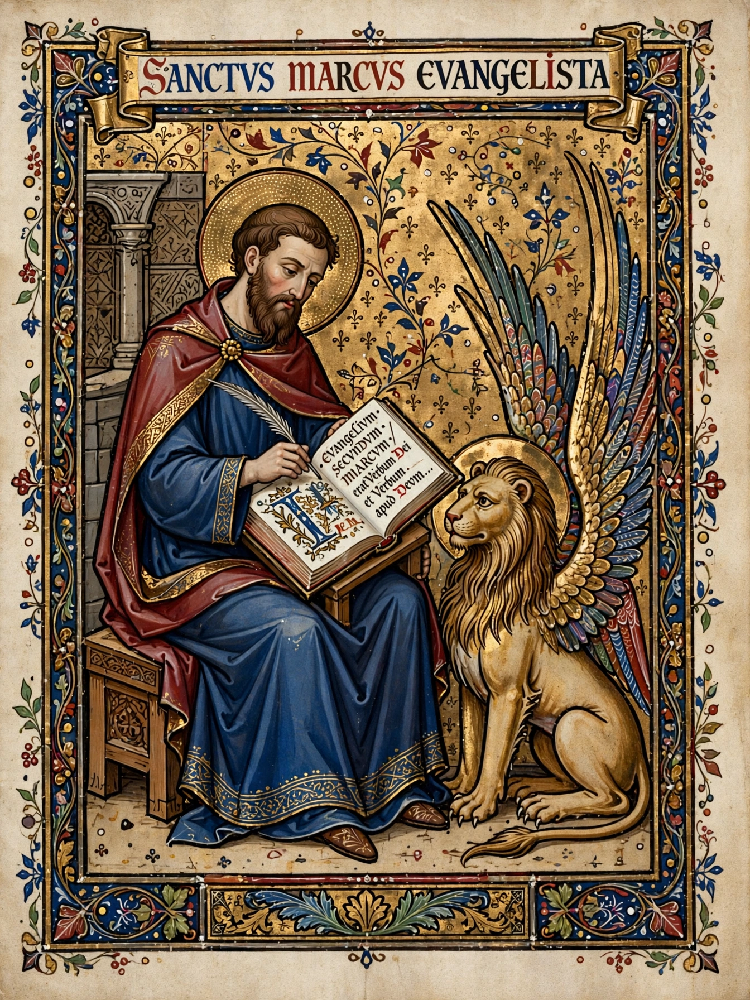

Mark the Evangelist
| Saint Mark the Evangelist | |
|---|---|
 | |
| Born | c. 12 AD Cyrene, Crete and Cyrenaica, Roman Empire (tradition) |
| Died | c. 68 AD (aged c. 56) Alexandria, Egypt, Roman Empire |
| Venerated in | All Christian denominations that venerate saints |
| Feast | 25 April (Catholic, Anglican); 30 Parmouti (Coptic) |
| Attributes | Winged lion; bishop on a throne; scroll or book |
| Patronage | Venice; notaries; lawyers; Egypt; Coptic Christians |
Mark the Evangelist (Koinē Greek: Μᾶρκος, romanized: Mârkos), also known as John Mark or Saint Mark, is the person who is traditionally ascribed to be the author of the Gospel of Mark. Most modern Bible scholars have concluded that the Gospel of Mark was written by an anonymous author rather than an identifiable historical Mark.
According to Church tradition, Mark founded the episcopal see of Alexandria, which was one of the five most important sees of early Christianity. His feast day is celebrated on April 25, and his symbol is the winged lion.
Identity
The New Testament figure "John, whose other name was Mark" appears in the Acts of the Apostles as a companion of Paul and Barnabas; his mother's house in Jerusalem served as a meeting place for early Christians. A sharp disagreement over Mark — who had earlier withdrawn from a missionary journey at Pamphylia — caused Paul and Barnabas to separate (Acts 15). Mark is also named in several epistles as a co-worker of Paul and, in 1 Peter, as Peter's "son", which underlies the tradition that Mark's Gospel records Peter's preaching. The church historian Eusebius, quoting Papias (c. 100 AD), describes Mark as Peter's interpreter who wrote down his recollections accurately, though not in order.
Mission and martyrdom
Tradition, especially in the Coptic Orthodox Church, holds that Mark evangelised Egypt and founded the Church of Alexandria, ordaining Anianus as its second patriarch. He is said to have been martyred in Alexandria in about 68 AD, when pagans dragged him through the streets of the city with a rope around his neck.
Relics and Venice
In 828, Venetian merchants stole what were believed to be Mark's relics from Alexandria and brought them to Venice, where they were enshrined in St Mark's Basilica; the winged lion of Saint Mark became the symbol of Venice and its former empire. The Coptic Church maintains that Mark's head remained in Alexandria, and in 1968 Pope Cyril VI received a portion of the relics from Rome, now kept in Saint Mark's Coptic Orthodox Cathedral in Cairo.
See also
References
Black, C. Clifton (1994). Mark: Images of an Apostolic Interpreter. University of South Carolina Press.
Eusebius of Caesarea, Ecclesiastical History, Book III.